Combine the complete workflow into a repeatable plan for a low-risk maintenance or upgrade task, including intake, safety, reference checks, service, testing and documentation.
100% FREE
Read. See. Watch. Review.
This module combines an in-depth original lesson, visuals beside the relevant steps, one focused video position and a free PDF for offline review.
Module objective
Combine the complete workflow into a repeatable plan for a low-risk maintenance or upgrade task, including intake, safety, reference checks, service, testing and documentation.
What competence means here
This module is about your first structured laptop maintenance job. Competence means more than recognizing component names. You should understand the reasoning behind the workflow, identify the risks, know what information must come from the exact laptop model, and be able to define a verification plan. The goal is to finish the lesson able to explain what you would do and why, not merely repeat a sequence from memory.
Begin with the exact laptop model
Laptop families often share a brand name while using different chassis, batteries, displays, storage interfaces, memory layouts, cooling systems and service procedures. Before opening a machine, identify the exact model and, when possible, the product or machine type number. Compare the device with reliable model-specific service documentation. If the layout in front of you differs from your reference, stop and verify instead of forcing the next step. A correct model reference can prevent damaged clips, cables, screws and incompatible upgrades.
Separate external power before service
Shut the operating system down normally when possible and disconnect the AC adapter or USB-C power source before opening the machine. Many laptops also contain an internal battery that remains electrically connected even when the computer is off. Follow model-specific guidance for battery isolation before manipulating sensitive internal components. Do not work on a swollen, punctured, crushed, unusually hot or otherwise damaged lithium-ion battery as if it were a normal beginner exercise.
Document the condition before you begin
Record the reported symptom, visible condition and key functions before service. If the laptop works, verify basics such as charging, display, keyboard, trackpad, wireless connectivity, storage detection and audio where relevant. During service, photograph cable routes and unusual bracket arrangements when appropriate. Keep fasteners organized by location. Documentation gives you a baseline for final testing and reduces the chance of blaming a pre-existing fault on the repair process.
Use evidence instead of replacement guesses
A laptop that will not power on can involve the charger, cable, charging port, battery, embedded controller, firmware, memory, main board or other components. A slow laptop can involve storage, memory pressure, software, thermal throttling or a failing drive. Do not select a replacement part simply because it is associated with the symptom. Confirm the behavior, inspect the machine, perform safe external checks and choose the next test that reduces uncertainty.
Keep the repair controlled
Every action should have a purpose. Before removing a cover, cable or module, ask what you need to access, what can be damaged and what would make you stop. Resistance can indicate a hidden screw, a clip, adhesive, a cable or an incorrect assumption. Never use extra force merely because a panel has not released. Improve visibility, compare with the service reference and understand the cause before continuing.
Treat flex cables and connectors as precision parts
Laptop keyboards, trackpads, displays, speakers, batteries and I/O boards often use small ribbon cables or board connectors. Some connectors use locking tabs; others press vertically or slide. The release method is not universal. Inspect the connector and use the exact service procedure rather than prying blindly. A damaged socket can turn a simple maintenance job into board-level repair.
Use one video as reinforcement
Each module provides one focused video position because the student should not need to jump through a playlist to understand the lesson. Watch the video for the complete flow, then study the written explanation and step visuals for slower reasoning and safety detail. Finally, revisit the video to reinforce the sequence. The video complements the platform's original material rather than replacing it.
Testing is part of the service
A maintenance job is not complete just because the laptop reaches the desktop. Test the original complaint and the systems that may have been disturbed. Depending on the work, that can include charging, battery detection, display, keyboard, trackpad, memory, storage, USB ports, audio, wireless networking, sleep and wake behavior, fans, temperature and sustained stability. Record the results so the outcome can be compared with the pre-service baseline.
Know where beginner scope ends
Some laptop work is appropriate for careful beginners, such as certain RAM or storage upgrades on machines designed for service. Other work can involve soldered power circuits, damaged lithium batteries, liquid-damaged boards, high-voltage sections in external power equipment, delicate display assemblies or complex board-level faults. Capability includes recognizing when you need specialized tools, manufacturer information or qualified professional help.
Write a complete maintenance plan
Choose a low-risk task such as a compatible RAM/SSD upgrade or model-approved cleaning job and write every step before starting.
Explain each action before performing it
If you cannot explain why a step is needed or what can go wrong, review the lesson.
Document the final result
Record what was changed, what was tested and any limitations or follow-up recommendations.
Applied reasoning drill 1
Imagine a laptop arrives with a complaint related to this module. Build a five-part plan: observation, risk, reference, action and verification. Observation must contain only facts you can reproduce or inspect. Risk should name the battery, cable, connector, data, component or function that could be harmed. Reference should identify the exact-model service information or compatibility data you still need. Action should describe one controlled intervention rather than a chain of assumptions. Verification should name the tests that prove whether the intervention achieved its purpose. If the machine does not match the reference, stop and resolve the difference before continuing. This drill trains a repair process that can be explained and audited instead of improvised.
Applied reasoning drill 2
Imagine a laptop arrives with a complaint related to this module. Build a five-part plan: observation, risk, reference, action and verification. Observation must contain only facts you can reproduce or inspect. Risk should name the battery, cable, connector, data, component or function that could be harmed. Reference should identify the exact-model service information or compatibility data you still need. Action should describe one controlled intervention rather than a chain of assumptions. Verification should name the tests that prove whether the intervention achieved its purpose. If the machine does not match the reference, stop and resolve the difference before continuing. This drill trains a repair process that can be explained and audited instead of improvised.
Applied reasoning drill 3
Imagine a laptop arrives with a complaint related to this module. Build a five-part plan: observation, risk, reference, action and verification. Observation must contain only facts you can reproduce or inspect. Risk should name the battery, cable, connector, data, component or function that could be harmed. Reference should identify the exact-model service information or compatibility data you still need. Action should describe one controlled intervention rather than a chain of assumptions. Verification should name the tests that prove whether the intervention achieved its purpose. If the machine does not match the reference, stop and resolve the difference before continuing. This drill trains a repair process that can be explained and audited instead of improvised.
Applied reasoning drill 4
Imagine a laptop arrives with a complaint related to this module. Build a five-part plan: observation, risk, reference, action and verification. Observation must contain only facts you can reproduce or inspect. Risk should name the battery, cable, connector, data, component or function that could be harmed. Reference should identify the exact-model service information or compatibility data you still need. Action should describe one controlled intervention rather than a chain of assumptions. Verification should name the tests that prove whether the intervention achieved its purpose. If the machine does not match the reference, stop and resolve the difference before continuing. This drill trains a repair process that can be explained and audited instead of improvised.
Applied reasoning drill 5
Imagine a laptop arrives with a complaint related to this module. Build a five-part plan: observation, risk, reference, action and verification. Observation must contain only facts you can reproduce or inspect. Risk should name the battery, cable, connector, data, component or function that could be harmed. Reference should identify the exact-model service information or compatibility data you still need. Action should describe one controlled intervention rather than a chain of assumptions. Verification should name the tests that prove whether the intervention achieved its purpose. If the machine does not match the reference, stop and resolve the difference before continuing. This drill trains a repair process that can be explained and audited instead of improvised.
Common beginner mistakes
Typical mistakes include opening the machine before confirming the model, mixing screws, pulling ribbon cables, forcing covers, using incompatible upgrade parts, cleaning while a battery remains connected when the procedure requires isolation, and judging success only by whether Windows boots. Another frequent mistake is changing several things at once. If multiple variables change, you may not know which one fixed the fault or which one introduced a new problem. Preserve diagnostic clarity by working in controlled steps.
Build a final test plan
Before reassembly, decide what you will test afterward. Include the original complaint and any functions physically disturbed by the work. A memory upgrade should be followed by detection and stability checks. Storage work should verify detection, boot behavior and data handling appropriate to the task. Cooling work should include fan behavior and temperature observation. Display or peripheral work should include the affected inputs and outputs. Testing should be written down rather than improvised at the end.
Free learning resources
This lesson, the knowledge check and the downloadable PDF are provided free of charge. The PDF is intended for offline review so the student can revisit the workflow without needing to keep the lesson open. Free access does not mean shallow content. The course is being designed so that a learner who completes it carefully can move into appropriate supervised practice with a structured process, realistic expectations and clear safety limits.
Service planning exercise 6
Choose a hypothetical laptop model and write a service plan without opening it. Record the model identifier, the complaint, the compatible power source, the internal battery strategy, the tools you expect to need and the model-specific documentation you would consult. Then list three things that could make you stop before the planned intervention. Finish with a verification checklist that covers the original symptom and every subsystem you might disturb. The value of this exercise is not the imaginary repair itself; it is learning to prepare decisions before the device is open and vulnerable. Repeat the exercise until the sequence feels natural and evidence-driven rather than rushed.
Service planning exercise 7
Choose a hypothetical laptop model and write a service plan without opening it. Record the model identifier, the complaint, the compatible power source, the internal battery strategy, the tools you expect to need and the model-specific documentation you would consult. Then list three things that could make you stop before the planned intervention. Finish with a verification checklist that covers the original symptom and every subsystem you might disturb. The value of this exercise is not the imaginary repair itself; it is learning to prepare decisions before the device is open and vulnerable. Repeat the exercise until the sequence feels natural and evidence-driven rather than rushed.
Service planning exercise 8
Choose a hypothetical laptop model and write a service plan without opening it. Record the model identifier, the complaint, the compatible power source, the internal battery strategy, the tools you expect to need and the model-specific documentation you would consult. Then list three things that could make you stop before the planned intervention. Finish with a verification checklist that covers the original symptom and every subsystem you might disturb. The value of this exercise is not the imaginary repair itself; it is learning to prepare decisions before the device is open and vulnerable. Repeat the exercise until the sequence feels natural and evidence-driven rather than rushed.
Service planning exercise 9
Choose a hypothetical laptop model and write a service plan without opening it. Record the model identifier, the complaint, the compatible power source, the internal battery strategy, the tools you expect to need and the model-specific documentation you would consult. Then list three things that could make you stop before the planned intervention. Finish with a verification checklist that covers the original symptom and every subsystem you might disturb. The value of this exercise is not the imaginary repair itself; it is learning to prepare decisions before the device is open and vulnerable. Repeat the exercise until the sequence feels natural and evidence-driven rather than rushed.
Service planning exercise 10
Choose a hypothetical laptop model and write a service plan without opening it. Record the model identifier, the complaint, the compatible power source, the internal battery strategy, the tools you expect to need and the model-specific documentation you would consult. Then list three things that could make you stop before the planned intervention. Finish with a verification checklist that covers the original symptom and every subsystem you might disturb. The value of this exercise is not the imaginary repair itself; it is learning to prepare decisions before the device is open and vulnerable. Repeat the exercise until the sequence feels natural and evidence-driven rather than rushed.
VISUAL STEP-BY-STEP
Turn the lesson into a repeatable process

STEP 01
Write a complete maintenance plan
Choose a low-risk task such as a compatible RAM/SSD upgrade or model-approved cleaning job and write every step before starting.
Model check: confirm the exact laptop service procedure and compatibility information before applying this concept to a real machine.

STEP 02
Explain each action before performing it
If you cannot explain why a step is needed or what can go wrong, review the lesson.
Model check: confirm the exact laptop service procedure and compatibility information before applying this concept to a real machine.

STEP 03
Document the final result
Record what was changed, what was tested and any limitations or follow-up recommendations.
Model check: confirm the exact laptop service procedure and compatibility information before applying this concept to a real machine.
ONE VIDEO FOR THIS MODULE
Watch the complete lesson
FREE DOWNLOAD
Save the module PDF at no cost
Download the study version for offline review. No payment is required.
Explain the module objective, major risks, exact-model information you would need and how you would verify success. If you cannot explain those points without copying the page, review the lesson again.